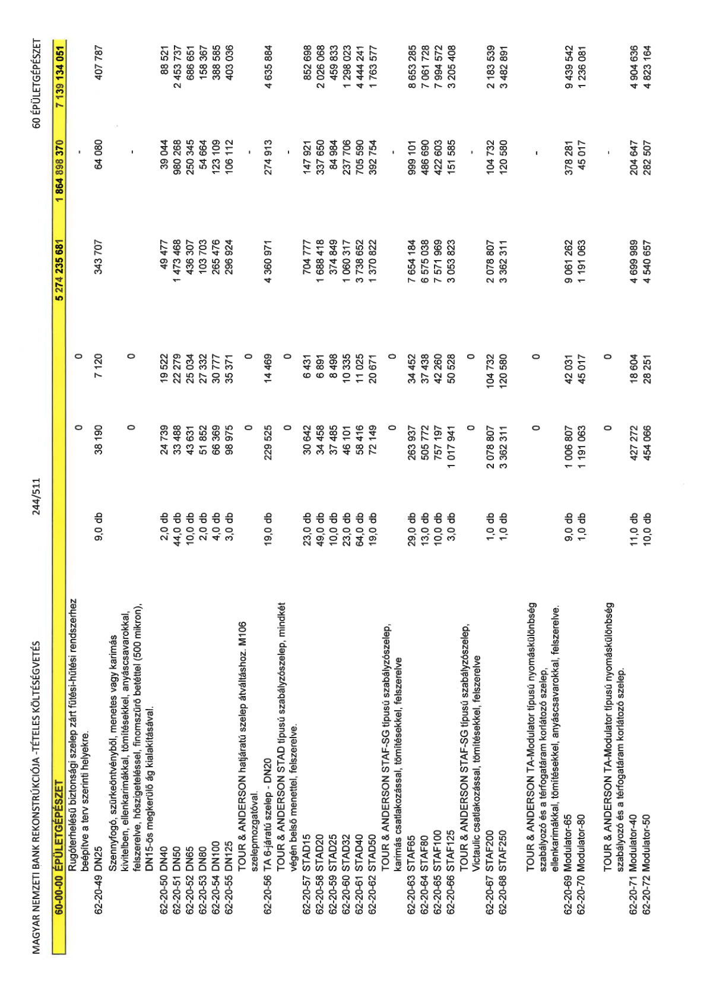

| Tétel | Menny. | Egys. | Anyag e.ár (net HUF) | Díj e.ár (net HUF) | Anyag összesen (net HUF) | Díj összesen (net HUF) | Anyag+Díj összesen (net HUF) |
|---|---|---|---|---|---|---|---|
| Rugóterhelésű biztonsági szelep zárt fűtési-hűtési rendszerhez beépítve a terv szerinti helyekre. | 0 | 0 | 0 | 0 | 0 | 0 | 0 |
| 62-20-49 DN25 | 9,0 | db | 38 190 | 7 120 | 343 707 | 64 080 | 407 787 |
| Szennyfogó, szürkeöntvényből, menetes vagy karimás kivitelben, ellenkarimákkal, tömítésekkel, anyáscsavarokkal, felszerelve, hőszigeteléssel, finomszűrő betéttel (500 mikron), DN15-ös megkerülő ág kialakításával. | 0 | 0 | 0 | 0 | 0 | 0 | 0 |
| 62-20-50 DN40 | 2,0 | db | 24 739 | 19 522 | 49 477 | 39 044 | 88 521 |
| 62-20-51 DN50 | 44,0 | db | 33 488 | 22 279 | 1 473 468 | 980 268 | 2 453 737 |
| 62-20-52 DN65 | 10,0 | db | 43 631 | 25 034 | 436 307 | 250 345 | 686 651 |
| 62-20-53 DN80 | 2,0 | db | 51 852 | 27 332 | 103 703 | 54 664 | 158 367 |
| 62-20-54 DN100 | 4,0 | db | 66 369 | 30 777 | 265 476 | 123 109 | 388 585 |
| 62-20-55 DN125 | 3,0 | db | 98 975 | 35 371 | 296 924 | 106 112 | 403 036 |
| TOUR & ANDERSON hatjáratú szelep átváltáshoz. M106 szelepmozgatóval. | 0 | 0 | 0 | 0 | 0 | 0 | 0 |
| 62-20-56 TA 6-járatú szelep - DN20 | 19,0 | db | 229 525 | 14 469 | 4 360 971 | 274 913 | 4 635 884 |
| TOUR & ANDERSON STAD típusú szabályzószelep, mindkét végén belső menettel, felszerelve. | 0 | 0 | 0 | 0 | 0 | 0 | 0 |
| 62-20-57 STAD15 | 23,0 | db | 30 642 | 6 431 | 704 777 | 147 921 | 852 698 |
| 62-20-58 STAD20 | 49,0 | db | 34 458 | 6 891 | 1 688 418 | 337 650 | 2 026 068 |
| 62-20-59 STAD25 | 10,0 | db | 37 485 | 8 498 | 374 849 | 84 984 | 459 833 |
| 62-20-60 STAD32 | 23,0 | db | 46 101 | 10 335 | 1 060 317 | 237 706 | 1 298 023 |
| 62-20-61 STAD40 | 64,0 | db | 58 416 | 11 025 | 3 738 652 | 705 590 | 4 444 241 |
| 62-20-62 STAD50 | 19,0 | db | 72 149 | 20 671 | 1 370 822 | 392 754 | 1 763 577 |
| TOUR & ANDERSON STAF-SG típusú szabályzószelep, karimás csatlakozással, tömítésekkel, felszerelve | 0 | 0 | 0 | 0 | 0 | 0 | 0 |
| 62-20-63 STAF65 | 29,0 | db | 263 937 | 34 452 | 7 654 184 | 999 101 | 8 653 285 |
| 62-20-64 STAF80 | 13,0 | db | 505 772 | 37 438 | 6 575 038 | 486 690 | 7 061 728 |
| 62-20-65 STAF100 | 10,0 | db | 757 197 | 42 260 | 7 571 969 | 422 603 | 7 994 572 |
| 62-20-66 STAF125 | 3,0 | db | 1 017 941 | 50 528 | 3 053 823 | 151 585 | 3 205 408 |
| TOUR & ANDERSON STAF-SG típusú szabályzószelep, Victaulic csatlakozással, tömítésekkel, felszerelve | 0 | 0 | 0 | 0 | 0 | 0 | 0 |
| 62-20-67 STAF200 | 1,0 | db | 2 078 807 | 104 732 | 2 078 807 | 104 732 | 2 183 539 |
| 62-20-68 STAF250 | 1,0 | db | 3 362 311 | 120 580 | 3 362 311 | 120 580 | 3 482 891 |
| TOUR & ANDERSON TA-Modulator típusú nyomáskülönbség szabályozó és a térfogatáram korlátozó szelep, ellenkarimákkal, tömítésekkel, anyáscsavarokkal, felszerelve. | 0 | 0 | 0 | 0 | 0 | 0 | 0 |
| 62-20-69 Modulator-65 | 9,0 | db | 1 006 807 | 42 031 | 9 061 262 | 378 281 | 9 439 542 |
| 62-20-70 Modulator-80 | 1,0 | db | 1 191 063 | 45 017 | 1 191 063 | 45 017 | 1 236 081 |
| TOUR & ANDERSON TA-Modulator típusú nyomáskülönbség szabályozó és a térfogatáram korlátozó szelep. | 0 | 0 | 0 | 0 | 0 | 0 | 0 |
| 62-20-71 Modulator-40 | 11,0 | db | 427 272 | 18 604 | 4 699 989 | 204 647 | 4 904 636 |
| 62-20-72 Modulator-50 | 10,0 | db | 454 066 | 28 251 | 4 540 657 | 282 507 | 4 823 164 |
